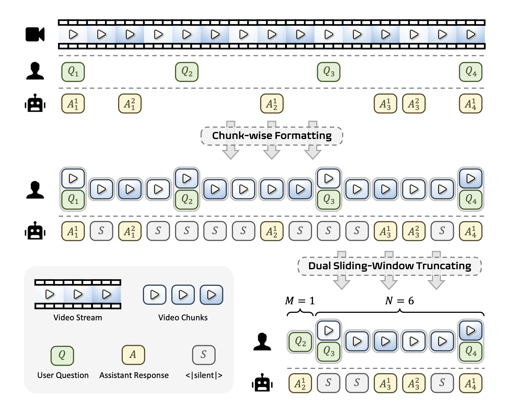
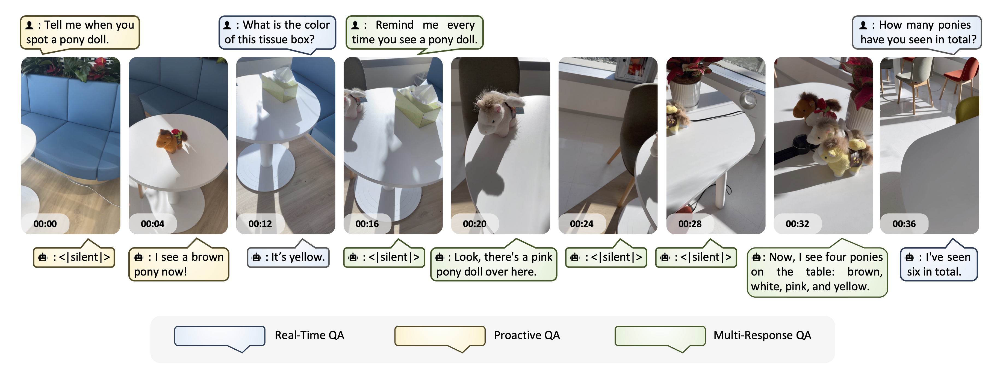
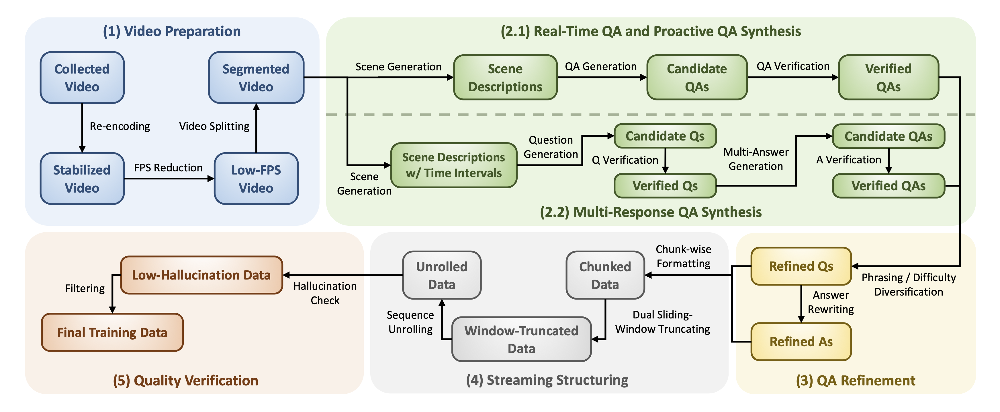
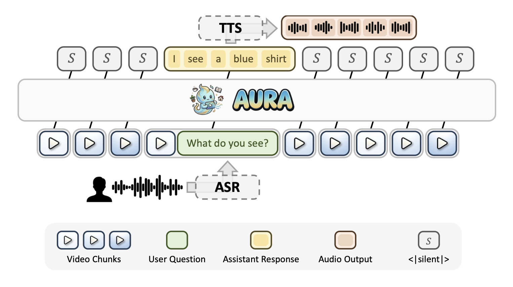

AURA: Always-On Understanding and
Real-Time Assistance via Video Streams
1Huawei Research 2CUHK MMLab
*Equal contribution † Project Lead ‡ Corresponding author
Video Large Language Models (VideoLLMs) have achieved strong performance on many video understanding tasks, but most existing systems remain offline and are not well-suited for live video streams that require continuous observation and timely response. Recent streaming VideoLLMs have made progress, yet current approaches often rely on decoupled trigger-response pipelines or are limited to captioning-style narration, reducing their effectiveness for open-ended question answering and long-horizon interaction. We propose AURA (Always-On Understanding and Real-Time Assistance), an end-to-end streaming visual interaction framework that enables a unified VideoLLM to continuously process video streams and support both real-time question answering and proactive responses. AURA integrates context management, data construction, training objectives, and deployment optimization for stable long-horizon streaming interaction. It achieves state-of-the-art performance on streaming benchmarks and supports a real-time demo system with ASR and TTS running at 2 FPS on two 80G accelerators.
AURA is built around four co-designed components spanning context management, data construction, training, and deployment, enabling stable long-horizon streaming interaction from a unified model.
Streaming video and interaction history grow without bound, yet the LLM context window is finite.
AURA addresses this with a dual sliding-window strategy: a video window retaining the most
recent N seconds of frames, and a separate QA window preserving the last M question–answer
groups. Video chunks are organized in a chunk-wise conversational format where the model
either produces a response or emits a special <|silent|> token at each time step,
enabling asynchronous, always-on interaction without explicit user triggers.

Figure 1. Overview of the Interactive Video Stream Context Management mechanism. A dual sliding-window strategy manages the video stream (window size N) and the QA interaction history (window size M) jointly, keeping the total context bounded while preserving key historical information.
Based on this mechanism, AURA defines three streaming QA interaction types:
The model produces a single immediate response grounded in the currently available or previously observed visual context.
The model stays silent after receiving a query and generates a response only after sufficient visual evidence has accumulated in the stream.
For queries about ongoing events, the model continuously monitors and generates multiple responses over time as new visual information becomes available — without repeated user input.

Figure 2. Examples of the three streaming QA interaction types. Real-Time QA responds immediately; Proactive QA waits for sufficient evidence; Multi-Response QA tracks evolving events and produces multiple responses over time.
Training data for all three QA types is generated via a systematic five-stage pipeline. Starting from diverse internet videos, the pipeline synthesizes, refines, structures, and verifies streaming QA samples, covering different interaction patterns.

Figure 3. The Coarse-to-Fine Streaming Data Engine. The five stages are: (1) Video Preparation, (2) QA Synthesis, (3) QA Refinement, (4) Streaming Structuring, and (5) Quality Verification.
Diverse public videos are standardized by resampling to 2 FPS and re-encoding in H.264 for stable, consistent streaming input.
An MLLM performs scene-aware analysis and generates timestamped candidate QAs for Real-Time, Proactive, and Multi-Response settings.
The synthesized QA is diversified by expanding question difficulty for Real-Time QA and rewriting phrasings for Proactive and Multi-Response QA.
Timestamped QA sequences are unrolled into chunk-wise sliding-window training samples that match the streaming context management format.
A judge model filters samples whose target answers are not sufficiently grounded in the retained visual context and QA history.
In streaming data, the <|silent|> token appears far more frequently than
actual responses, creating a severe class imbalance. A standard cross-entropy loss would bias
the model to stay silent at all times. AURA introduces a Silent-Speech Balanced Loss
that (1) applies supervision only to silent assistant messages and the last non-silent
response in each training sample, and (2) down-weights silent tokens by the inverse imbalance
ratio so that both signal types contribute comparably. This prevents over-silence and substantially
improves proactive response capability.
To support real-time deployment, AURA is integrated with ASR and TTS modules in an asynchronous end-to-end pipeline. A key efficiency challenge is that standard FIFO context truncation invalidates the KV cache at every step. AURA solves this with a floating-window strategy: instead of removing one chunk at a time, batches of N' chunks are removed together so that the context prefix stays stable across N' steps, enabling aggressive prefix KV-cache reuse and dramatically reducing TTFT.

Figure 4. End-to-end real-time inference system. Video frames and user speech are captured simultaneously; ASR, the AURA main model, and TTS operate asynchronously to minimize perceived latency.
The following demos showcase AURA's real-time streaming interaction capabilities, including proactive alerting, multi-turn tracking, and real-time QA — across English and Chinese. Each demo runs at 2 FPS with speech I/O.
@article{lu2026aura,
title = {AURA: Always-On Understanding and Real-Time Assistance via Video Streams},
author = {Lu, Xudong and Bo, Yang and Chen, Jinpeng and Li, Shuhan and Guo, Xintong and
Guan, Huankang and Liu, Fang and Xu, Dunyuan and Sun, Peiwen and Sun, Heyang and
Liu, Rui and Li, Hongsheng},
journal = {arXiv preprint},
year = {2026}
}